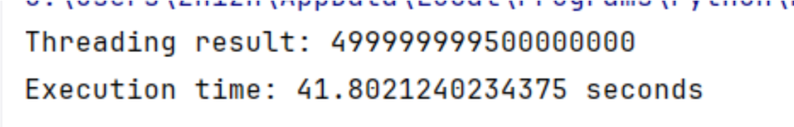
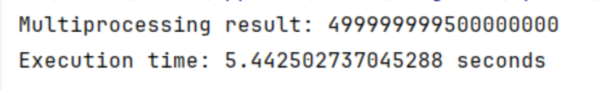
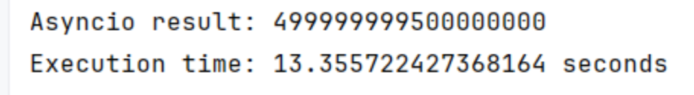
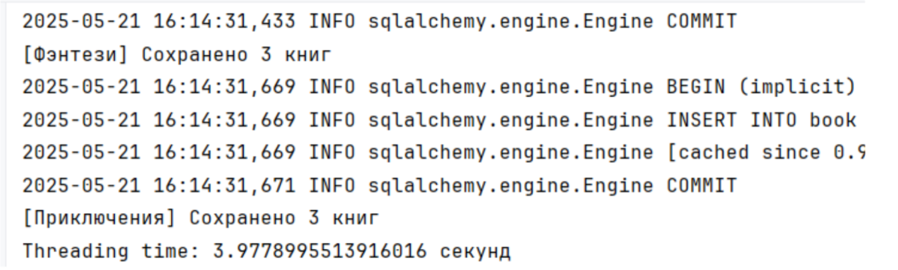
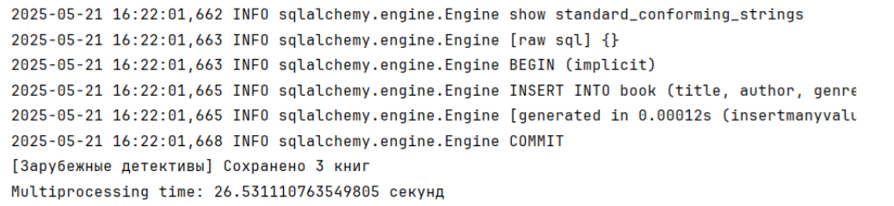
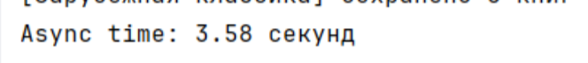

Лабораторная работа 2. Потоки. Процессы. Асинхронность.
Цель работы: понять отличия потоками и процессами и понять, что такое ассинхронность в Python.
Работа о потоках, процессах и асинхронности поможет студентам развить навыки создания эффективных и быстродействующих программ, что важно для работы с большими объемами данных и выполнения вычислений.
Задача 1. Различия между threading, multiprocessing и async в Python
Задача: Напишите три различных программы на Python, использующие каждый из подходов: threading, multiprocessing и async. Каждая программа должна решать считать сумму всех чисел от 1 до 10000000000000. Разделите вычисления на несколько параллельных задач для ускорения выполнения.
Подробности задания:
- Напишите программу на Python для каждого подхода: threading, multiprocessing и async.
- Каждая программа должна содержать функцию calculate_sum(), которая будет выполнять вычисления.
- Для threading используйте модуль threading, для multiprocessing - модуль multiprocessing, а для async - ключевые слова async/await и модуль asyncio.
- Каждая программа должна разбить задачу на несколько подзадач и выполнять их параллельно.
- Замерьте время выполнения каждой программы и сравните результаты.
Threading — Потоки
-
Описание: Позволяет запускать несколько потоков (threads) в рамках одного процесса.
-
Подходит для: I/O-bound задач (ожидание сетевых запросов, чтение/запись файлов).
-
Ограничение: Глобальная блокировка интерпретатора (GIL) не позволяет выполнять Python-байткод параллельно в нескольких потоках на уровне CPU-bound задач.
-
Память: Потоки разделяют память, проще синхронизация.
-
Библиотека: threading
threading.py:
def partial_sum(start, end, result, index):
result[index] = sum(range(start, end))
def thread_sum():
num_threads = 4
total = 1000000000
step = total // num_threads
threads = []
results = [0] * num_threads
for i in range(num_threads):
start = i * step
end = (i + 1) * step if i != num_threads - 1 else total
thread = threading.Thread(target=partial_sum, args=(start, end, results, i))
threads.append(thread)
thread.start()
for thread in threads:
thread.join()
return sum(results)
start_time = time.time()
result = thread_sum()
print("Threading result:", result)
print("Execution time:", time.time() - start_time, "seconds")
Результат выполнения

Multiprocessing — Процессы
-
Описание: Создаёт отдельные процессы, каждый со своим интерпретатором Python и памятью.
-
Подходит для: CPU-bound задач (массивные вычисления, сложные алгоритмы).
-
Преимущество: Обходит GIL, процессы работают параллельно на разных ядрах CPU.
-
Память: Процессы не разделяют память (используются очереди, пайпы и т.п. для обмена данными).
-
Библиотека: multiprocessing
-
multiprocessing.py:
def calculate_partial_sum(start, end):
return sum(range(start, end))
def multiprocessing_sum():
num_processes = 4
total = 1000000000
step = total // num_processes
with multiprocessing.Pool(processes=num_processes) as pool:
tasks = [(i * step, (i + 1) * step if i != num_processes - 1 else total) for i in range(num_processes)]
results = pool.starmap(calculate_partial_sum, tasks)
return sum(results)
if __name__ == "__main__":
multiprocessing.freeze_support()
start_time = time.time()
result = multiprocessing_sum()
print("Multiprocessing result:", result)
print("Execution time:", time.time() - start_time, "seconds")
Результат выполнения

Async - Асинхронность
-
Описание: Использует событийный цикл (event loop) для асинхронного выполнения задач без блокировки.
-
Подходит для: I/O-bound задач, высокой производительности в большом числе соединений (например, сетевые сервера).
-
Параллелизм: Не настоящий параллелизм, а кооперативная многозадачность — задачи уступают управление вручную.
-
Память: Всё происходит в одном потоке, одной памяти.
-
Библиотека: asyncio
async.py:
def calculate_partial_sum(start, end):
return sum(range(start, end))
async def async_sum():
loop = asyncio.get_event_loop()
executor = ThreadPoolExecutor(max_workers=4)
total = 1000000000
step = total // 4
tasks = [
loop.run_in_executor(executor, calculate_partial_sum, i * step, (i + 1) * step if i != 3 else total)
for i in range(4)
]
results = await asyncio.gather(*tasks)
return sum(results)
start_time = time.time()
result = asyncio.run(async_sum())
print("Asyncio result:", result)
print("Execution time:", time.time() - start_time, "seconds")
Результат выполнения

| Multiprocessing | 5.44 sec |
|---|---|
| Threading | 41.8 sec |
| Async | 13.35 sec |
Multiprocessing — Лучшая производительность для CPU-bound задач
Почему работает быстрее:
- Каждый процесс запускается независимо и получает своё собственное ядро (если доступно), что позволяет выполнять настоящий параллелизм.
- Python-интерпретатор (CPython) использует GIL (Global Interpreter Lock), который ограничивает параллельное выполнение Python-байткода. multiprocessing обходит это, поскольку процессы не делят GIL.
Задача 2. Параллельный парсинг веб-страниц с сохранением в базу данных
Задача: Напишите программу на Python для параллельного парсинга нескольких веб-страниц с сохранением данных в базу данных с использованием подходов threading, multiprocessing и async. Каждая программа должна парсить информацию с нескольких веб-сайтов, сохранять их в базу данных.
Парсинг с сайта Буквоед
Threading
threading.py:
def thread_parse_and_save(url, genre):
parse_and_save(url, genre)
def run_with_threading():
start_time = time.time()
threads = []
for genre, url in urls.items():
thread = threading.Thread(target=thread_parse_and_save, args=(url, genre))
threads.append(thread)
thread.start()
for thread in threads:
thread.join()
end_time = time.time()
print(f"Threading time: {end_time - start_time} секунд")
if __name__ == "__main__":
run_with_threading()
Результат выполнения:

Multiprocessing
multiprocessing.py:
def process_parse_and_save(url, genre):
parse_and_save(url, genre)
def run_with_multiprocessing():
start_time = time.time()
processes = []
for genre, url in urls.items():
process = multiprocessing.Process(target=process_parse_and_save, args=(url, genre))
processes.append(process)
process.start()
for process in processes:
process.join()
end_time = time.time()
print(f"Multiprocessing time: {end_time - start_time} секунд")
if __name__ == "__main__":
run_with_multiprocessing()

Async
Асинхронное подключение к бд через asyncpg
def create_tables():
engine = create_engine(DATABASE_URL.replace("+asyncpg", ""))
metadata.create_all(engine)
async.py:
async def fetch(session, url):
headers = {
"User-Agent": random.choice(USER_AGENTS),
"Accept": "...",
"Accept-Language": "...",
"Referer": "..."
}
async with session.get(url, headers=headers, timeout=10) as response:
return await response.text()
async def parse_books_from_genre_page(session, url, genre_name, max_books=3):
books = []
try:
html = await fetch(session, url)
await asyncio.sleep(random.uniform(1.5, 3.0))
soup = BeautifulSoup(html, "html.parser")
book_items = soup.select("li[class*=book-item__item]")[:max_books]
for item in book_items:
try:
title_tag = item.find("a", class_="book-item__title")
author_tag = item.find("a", class_="book-item__author")
if not title_tag or not author_tag:
continue
title = title_tag.text.strip()
author = author_tag.text.strip()
info_table = item.find("table", class_="book-item-edition")
rows = info_table.find_all("tr") if info_table else []
isbn, published_in, publisher = None, None, None
for row in rows:
label = row.find("td", class_="book-item-edition__col1").text.strip()
value = row.find_all("td")[1].text.strip()
if label == "ISBN:":
isbn = value
elif label == "Год издания:":
published_in = int(value)
elif label == "Издательство:":
publisher = value
if publisher:
publisher = publisher.replace('\xa0', ' ').replace('\r', '').replace('\n', '').strip()
publisher = ', '.join(part.strip() for part in publisher.split(','))
description_div = item.find("div", class_="book-item__text")
description = description_div.get_text(separator="\n").strip() if description_div else None
description = clean_description(description)
book_data = {
"title": title,
"author": author,
"genre": genre_name,
"isbn": isbn,
"published_in": published_in,
"publisher": publisher,
"description": description
}
books.append(book_data)
except Exception as e:
print("Ошибка при парсинге книги:", e)
continue
except Exception as e:
print(f"Ошибка при получении HTML: {e}")
return books
def save_books_to_db(books):
with Session(engine) as session:
for book_data in books:
book = Book(**book_data)
session.add(book)
session.commit()
async def async_parse_and_save(session, url, genre):
books = await parse_books_from_genre_page(session, url, genre)
loop = asyncio.get_running_loop()
await loop.run_in_executor(None, save_books_to_db, books)
print(f"[{genre}] Сохранено {len(books)} книг")
async def run_with_async():
start_time = time.time()
async with aiohttp.ClientSession() as session:
tasks = []
for genre, url in urls.items():
tasks.append(async_parse_and_save(session, url, genre))
await asyncio.gather(*tasks)
end_time = time.time()
print(f"Async time: {end_time - start_time:.2f} секунд")
if __name__ == "__main__":
asyncio.run(run_with_async())

| Threading | Multiprocessing | Async |
|---|---|---|
| 3.98 sec | 26.53 sec | 3.58 sec |
| Эффективно при небольшом количестве задач I/O. Простая реализация, низкие накладные расходы. | Неэффективен для I/O-задач, накладные расходы делают multiprocessing избыточным в этой задаче. | Быстрее других благодаря отсутствию лишнего создания потоков/процессов. |